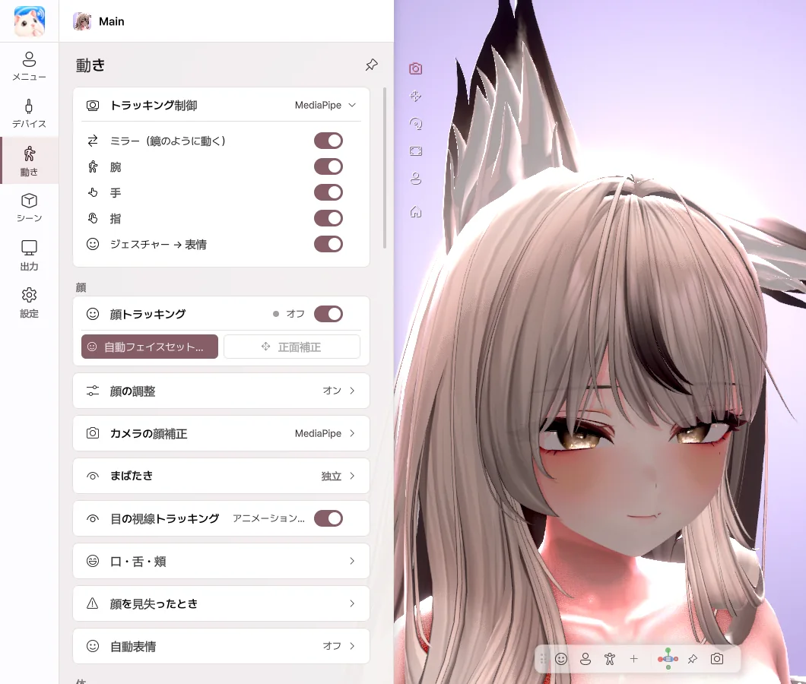
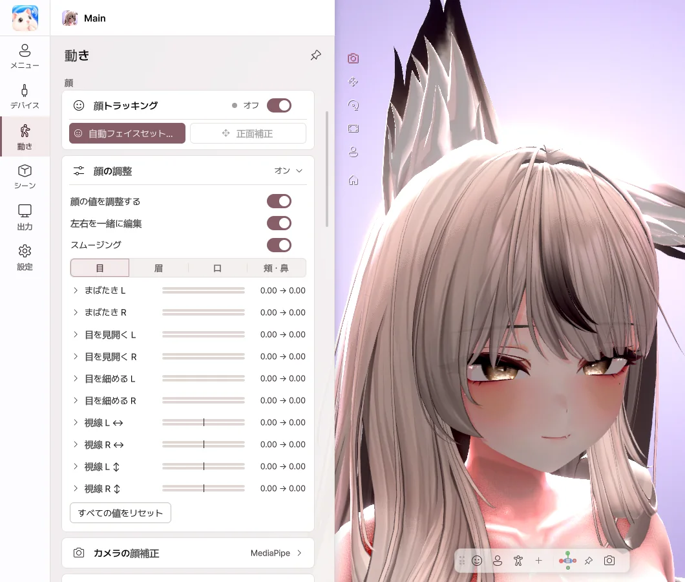
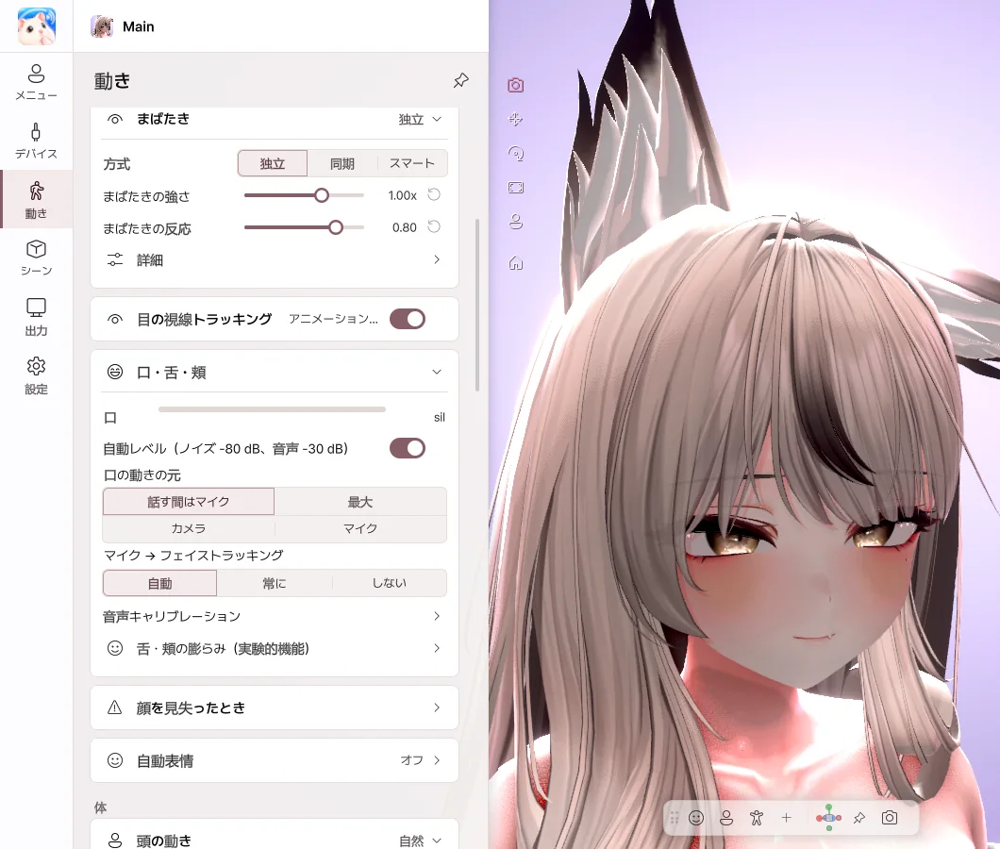
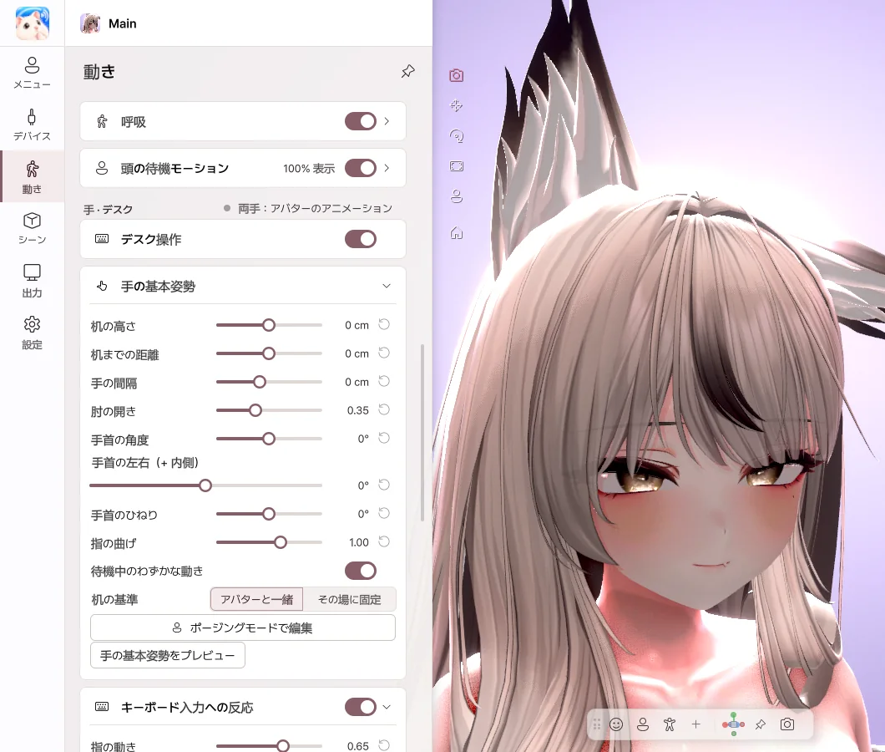

7. 動き
顔、体、手がどのように動くかを決めます。設定はアバターごとに保存されます。
フェイストラッキング

- ミラー — 鏡のように、同じ側に動きます。
- 腕・手・指 — Web カメラで各部位を動かします。
- ジェスチャー → 表情 — 手の形に合わせて、アバターの表情が変わります。
- 顔トラッキング — 表情のトラッキングをオン / オフします。
自動フェイスセットアップ

自動フェイスセットアップ ボタンを押すと、キャリブレーションが始まります。画面の案内に従って表情を作り、測定 を押してください。最後に 適用 を押すと、自分の顔に合わせて表情が調整されます。
最初のステップで見ている場所が、アバターの正面の視線になります。配信するときと同じように、画面を見てください。
顔の調整

- 目、眉、口、頬の表情をどのくらい大きく出すか、ひとつずつ調整します。
- スライダーを右に動かすと、その表情がより大きく出ます。
- 左右を一緒に編集 をオンにすると、両側が一緒に変わります。
- スムージング をオンにすると、表情のブレが減ります。
まばたき・口

- まばたきの方式 — 独立 はウインクがしやすく、同期 は両目が一緒に閉じます。
- 目の視線トラッキング — 瞳が自分の視線に合わせて動きます。
- 自動レベル — 声の大きさに合わせて、口の大きさを自動で調整します。
- 音声キャリブレーション — 母音のボタンを押して発音すると、自分の声に合わせて調整されます。
- 舌・頬の膨らみ — ボタンやショートカットで、舌を出したり頬を膨らませたりします。
体

- 頭の動き — 控えめ・自然・大きめ から選びます。
- 体の追従 — 頭の向きを変えると、体も自然についてきます。
- 自然な体の動き・呼吸 — じっとしていても、生きているように動きます。
手・デスク

- デスク操作 — 手がカメラに映っていないとき、キーボードとマウスに合わせてアバターの手が動きます。
- 手の基本姿勢 — 机の高さ、手の間隔、手首の角度を合わせます。
- キーボード・マウス入力への反応 — タイピングやマウスの動きの大きさを決めます。
キーボード入力はアバターの手を動かすためだけに使われ、入力した文字を保存・送信することはありません。
💡 舌・頬の膨らみのカメラ検出は、実験的機能です。